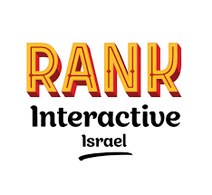

<div class="main-toolbar">
    <!--  logo-->
    <div class="img-wrappper">
        
    </div>
        <div class="spider">
            <div class="body">
                <div class="eye-left"></div>
                <div class="eye-right"></div>
                <div class="legs-left">
                    <div class="leg"></div>
                    <div class="leg"></div>
                    <div class="leg"></div>
                </div>
                <div class="legs-right">
                    <div class="leg"></div>
                    <div class="leg"></div>
                    <div class="leg"></div>
                </div>
            </div>
        </div>
    <!--  toolbar buttons-->
    <div class="toolbar-icons">
        <!--  language button-->
        <div #languagesPopoverButton="popover"
             [closeOnClickOutside]="true"
             [popoverTrigger]="languagesPopover"
             [position]="[{
            originX: 'center',
            originY: 'bottom',
            overlayX: 'center',
            overlayY: 'top'
         }]"
             class="language-icon">
            <span class="fi custom-fi fi-{{(language$ | async) === languageEnum.Hebrew ? 'il' : 'us'}}"></span>
        </div>
    </div>
</div>

<ng-template #languagesPopover>
    <div class="languages-popover">
        <a (click)="setGlobalLanguage(languageEnum.English)" class="language-option">
            <span class="fi fi-us"></span>
            <span>{{'En'}}</span>
        </a>
        <mat-divider class="mat-divider"></mat-divider>
        <a (click)="setGlobalLanguage(languageEnum.Hebrew)" class="language-option">
            <span class="fi fi-il"></span>
            <span>{{'עב'}}</span>
        </a>
    </div>
</ng-template>
